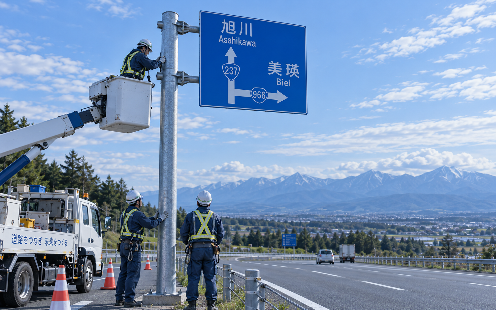
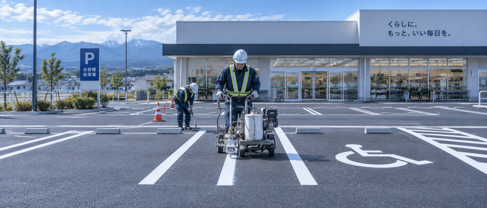

一般国道36号 札幌市豊平地区 道路区画線設置外一連工事
発注者：北海道開発局 札幌開発建設部
開発産業株式会社は、1973年（昭和48年）の創業以来、道路区画線・道路標識の施工を専門に続けてきました。国道や道道の交通安全施設工事から、警察本部の道路標示、店舗・事業所の駐車場区画線まで。
札幌本社と石狩営業所の2拠点で、道路の「線」を通じて地域の交通安全を支えています。
Trust
創業から50年以上／1973年（昭和48年）
令和7年度まで、北海道各地で公共の道路の安全を担い続けています。
事業内容 ― 道路の「線」と「標識」に特化しています

道路標識の新設・更新・撤去に対応。反射式大型標識や可変灯火式標識など、交通管理者向けの工事にも数多く携わってきました。基礎工事から標識柱の建込み、標識板の取り付けまで一貫して行います。

店舗・事業所・マンションなどの駐車場の白線・区画線を施工します。引き直し・レイアウト変更・身障者用スペースの表示にも対応。民間のご依頼を歓迎しており、お見積もりは無料です。
無料見積もり令和7年度まで、北海道各地で公共工事を担っています。発注者は北海道開発局・各総合振興局・札幌市・北海道警察本部・各市町村など。
一般国道36号 札幌市豊平地区 道路区画線設置外一連工事
発注者：北海道開発局 札幌開発建設部
中央線も、外側線も、その一本が交通の安全そのものです。開発産業は、交通量のある道路での保安・誘導を徹底し、発注者の仕様と検査基準を確実に満たす施工体制を整えています。

道路をつくる会社は、その地域で暮らす人たちに支えられています。施工を通じた貢献に加え、環境美化や安全づくりの活動にも参加しています。
地域の環境美化活動に参加しました。
道路区画線・駐車場区画線を施工し、町長より感謝状を授与されました。
地域の環境美化活動に参加しました。
道路の「線」は、毎日誰かの通勤・通学・物流を支えています。未経験からでも、先輩と現場に入りながら資格を取り、技術を身につけられます。見学のみ・短期のご相談も歓迎です。
4週8休日祝＋ほぼ土曜 手当5種資格・家族・住宅・通勤・出張 賞与年2回8月・12月 正社員登用アルバイトから
お見積もりは無料です。工事の場所・内容・おおよその面積をお知らせいただくと、スムーズにご案内できます。